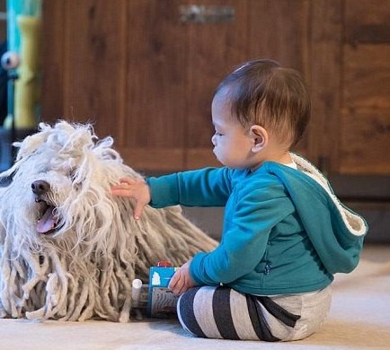
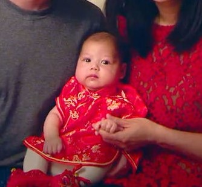
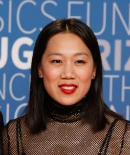
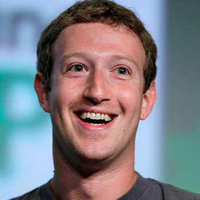
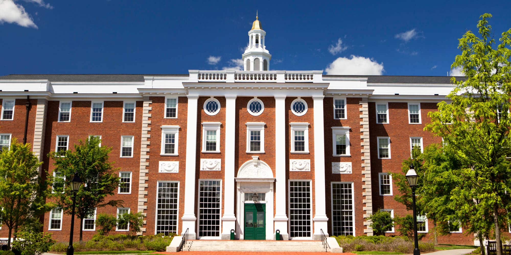
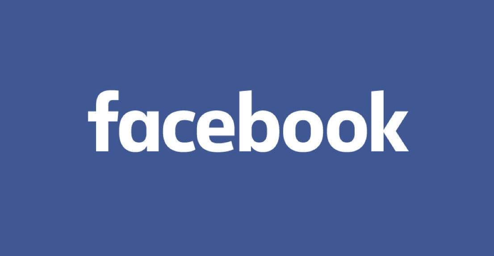
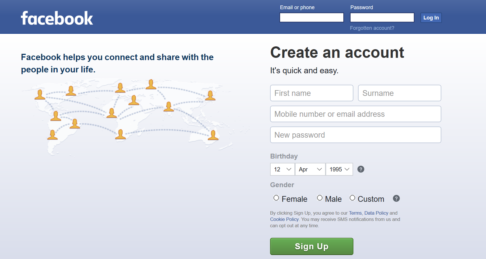

Mark Zuckerberg co-founded the social-networking website Facebook out of his college dorm room at Harvard University. Zuckerberg left college after his sophomore year to concentrate on the site, the user base of which has grown to more than two billion people, making Zuckerberg a billionaire many times over. The birth of Facebook was portrayed in the 2010 film The Social Network.
Click to see Quick Facts, then close it
Name:
Mark Zuckerberg.
Birth Date:
May 14, 1984 (age 35).
Known for:
Co-founding and leading Facebook, Inc.
Net worth:
54.3 billion $ (March 2020).
Education:
Phillips Exeter Academy, Harvard University.
Place of Birth:
White Plains, New York,U.S.A.
Zodiac Sign:
Taurus.
Wife:
Priscilla Chan.
Children:
2.
Mark's Family



Maxima Zuckerberg
August Zuckerberg
Priscilla Chan
"daughter"
"daughter"
"wife"
Early life of Mark Zuckerberg
Zuckerberg was born on May 14, 1984, in White Plains, New York, into a comfortable, well-educated family. He was raised in the nearby village of Dobbs Ferry.
Zuckerberg's father, Edward Zuckerberg, ran a dental practice attached to the family's home. His mother, Karen, worked as a psychiatrist before the birth of the couple's four children - Mark, Randi, Donna and Arielle.
Zuckerberg developed an interest in computers at an early age; when he was about 12, he used Atari BASIC to create a messaging program he named "Zucknet". His father used the program in his dental office, so that the receptionist could inform him of a new patient without yelling across the room. The family also used Zucknet to communicate within the house.
Together with his friends, he also created computer games just for fun. I had a bunch of friends who were artists, "he said". "They'd come over, draw stuff, and I'd build a game out of it."
Mark Zuckerberg's Education :
To keep up with Zuckerberg's burgeoning interest in computers, his parents hired private computer tutor David Newman to come to the house once a week and work with Zuckerberg. Newman later told reporters that it was hard to stay ahead of the prodigy, who began taking graduate courses at nearby Mercy College around this same time.
Zuckerberg later studied at Phillips Exeter Academy, an exclusive preparatory school in New Hampshire. There he showed talent in fencing, becoming the captain of the school's team. He also excelled in literature, earning a diploma in classics.
Yet Zuckerberg remained fascinated by computers and continued to work on developing new programs. While still in high school, he created an early version of the music software Pandora, which he called Synapse.
Several companies—including AOL and Microsoft—expressed an interest in buying the software, and hiring the teenager before graduation. He declined the offers.
Mark Zuckerberg's College Experience:
After graduating from Exeter in 2002, Zuckerberg enrolled at Harvard University. After his sophomore year, Zuckerberg dropped out of college to devote himself to his new company, Facebook, full time.
By his sophomore year at the Ivy League institution, he had developed a reputation as the go-to software developer on campus. It was at that time that he built a program called CourseMatch, which helped students choose their classes based on the course selections of other users.
He also invented Facemash, which compared the pictures of two students on campus and allowed users to vote on which one was more attractive. The program became wildly popular, but was later shut down by the school administration after it was deemed inappropriate.
Based on the buzz of his previous projects, three of his fellow students—Divya Narendra, and twins Cameron and Tyler Winklevoss—sought him out to work on an idea for a social networking site they called Harvard Connection. This site was designed to use information from Harvard's student networks in order to create a dating site for the Harvard elite.
Zuckerberg agreed to help with the project, but soon dropped out to work on his own social networking site, The Facebook.

Mark Zuckerberg and Founding Facebook:
Zuckerberg and his friends Dustin Moskovitz, Chris Hughes and Eduardo Saverin created The Facebook, a site that allowed users to create their own profiles, upload photos, and communicate with other users. The group ran the site out of a dorm room at Harvard University until June 2004.
That year Zuckerberg dropped out of college and moved the company to Palo Alto, California. By the end of 2004, Facebook had 1 million users.
In 2005, Zuckerberg's enterprise received a huge boost from the venture capital firm Accel Partners. Accel invested $12.7 million into the network, which at the time was open only to Ivy League students.
Zuckerberg's company then granted access to other colleges, high school and international schools, pushing the site's membership to more than 5.5 million users by December 2005. The site began attracting the interest of other companies that wanted to advertise with the popular social hub.
Not wanting to sell out, Zuckerberg turned down offers from companies such as Yahoo! and MTV Networks. Instead, he focused on expanding the site, opening up his project to outside developers and adding more features.

Facebook IPO:
In May 2012, Facebook had its initial public offering, which raised $16 billion, making it the biggest Internet IPO in history.
After the initial success of the IPO, the Facebook stock price dropped somewhat in the early days of trading, though Zuckerberg is expected to weather any ups and downs in his company's market performance.
In 2013, Facebook made the Fortune 500 list for the first time—making Zuckerberg, at the age of 28, the youngest CEO on the list.
Mark Zuckerberg's Donations and Philanthropic Causes:
Since amassing his sizeable fortune, Zuckerberg has used his millions to fund a variety of philanthropic causes. The most notable examples came in September 2010, when he donated $100 million to save the failing Newark Public Schools system in New Jersey.
Then, in December 2010, Zuckerberg signed the "Giving Pledge", promising to donate at least 50 percent of his wealth to charity over the course of his lifetime. Other Giving Pledge members include Bill Gates, Warren Buffett and George Lucas. After his donation, Zuckerberg called on other young, wealthy entrepreneurs to follow suit.
"With a generation of younger folks who have thrived on the success of their companies, there is a big opportunity for many of us to give back earlier in our lifetime and see the impact of our philanthropic efforts," he said.
In November 2015, Zuckerberg and his wife also pledged in an open letter to their daughter that they would give 99 percent of their Facebook shares to charity.
"We are committed to doing our small part to help create this world for all children," the couple wrote in the open letter that was posted on Zuckerberg's Facebook page. "We will give 99% of our Facebook shares - currently about $45 billion - during our lives to join many others in improving this world for the next generation."
In September 2016, Zuckerberg and Chan announced that the Chan Zuckerberg Initiative (CZI), the company into which they put their Facebook shares, would invest at least $3 billion into scientific research over the next decade to help “cure, prevent and manage all diseases in our children's lifetime." Renowned neuroscientist Cori Bargmann of The Rockefeller University, was named the president of science at CZI.
They also announced the founding of Chan Zuckerberg Biohub, a San Francisco-based independent research center that will bring together engineers, computer scientists, biologists, chemists and others in the scientific community. A partnership between Stanford University, the University of California, San Francisco, and the University of California, Berkeley, Biohub will receive initial funding of $600 million over 10 years.
🌐
Facebook

Facebook, American company offering online social networking services. Facebook was founded in 2004 by Mark Zuckerberg, Eduardo Saverin, Dustin Moskovitz, and Chris Hughes, all of whom were students at Harvard University. Facebook became the largest social network in the world, with more than one billion users as of 2012, and about half that number were using Facebook every day. The company's headquarters are in Menlo Park, California.
*Facebook helps you connect and share with the people in your life*.
Click to know Interesting Facts about Mark Zuckerberg
Mark created a program called ZuckNET when he was at home that allowed all the computers in his parent's home and home office to communicate.
While still in high school Mark Zuckerberg was offered jobs with Microsoft and AOL but he turned them down.
The movie The Social Network was made about the birth of Facebook.
By July of 2010 Facebook had reached the 500 million user mark and Mark Zuckerberg was chosen by New Statesman's annual survey as number 16 of the 50 most influential figures.
In 2013 Mark Zuckerberg's own Facebook profile was hacked.
Mark Zuckerberg, as part of the Giving Pledge commitment, has promised that he will donate 50% of his wealth or more during his lifetime.
Mark Zuckerberg was not a fan of the movie The Social Network and claimed that many unimportant details were correct while many important details were incorrect.
Mark Zuckerberg made the Fortune 500 list for the first time in May 2013. He was only 28 and the youngest CEO.
🌠
Click to read Quotes by Mark Zuckerberg
1. Move fast and break things. Unless you are breaking stuff, you are not moving fast enough.
2. The biggest risk is not taking any risk.
3. I think a simple rule of business is, if you do the things that are easier first, then you can actually make a lot of progress.
4. Find that thing you are super passionate about.
5. People don't care about what you say, they care about what you build.
6. Advertising works most effectively when it's in line with what people are already trying to do.
7. I think as a company, if you can get those two things right-- having a clear direction on what you are trying to do and bringing in great people who can execute on the stuff-- then you can do pretty well.
8. You are better off trying something and having it not work and learning from that than not doing anything at all.
9. Helping a billion people connect is amazing, humbling and by far the thing I am most proud of in my life.